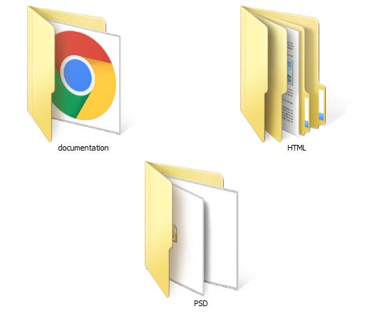
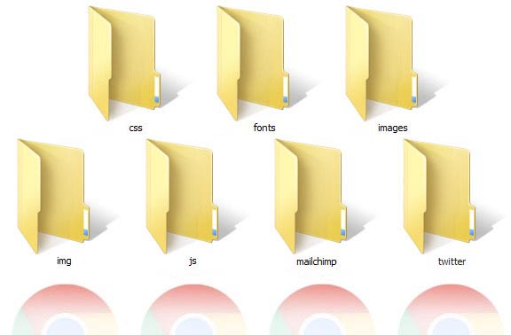

Created: 07.07.2016
By: MW Templates
Email: support@modernwebtemplates.com
Thank you for purchasing our Template. If you have any questions that are beyond the scope of this help file, please feel free to email via my user page contact form. Thanks so much!
You can find following folders in download package

- "documentation" folder contains this documentation.
- "HTML" - folder contains actual template with all of HTML, JS and PHP files. It's content will explored below.
- "PSD" folder contains all of PSD files.
HTML folder contents

- "css" folder contains CSS files. You can find more about CSS files in HTML Structure section of this documentation.
- "fonts" folder has all of custom fonts which used in this template, such as icon fonts, font awesome, social icons etc.
- "images" folder contents all of images that used on template pages. It has several subfolders:
- "gallery" folder contents images for isotope carousel galleries and other subpages.
- "parallax" folder contents background images for parallax sections.
- "parthers" folder contents images for partners carousel.
- "team" folder contents photos of team members.
- "img" folder contents all of images that used in CSS files for template styling (such as patterns, preloader etc).
- "js" folder contents javascript files that are used in this template. It has "vendor" subfolder that contents all of thirdpart plugins and libs. Go to Sources and Credits section for list of thirdpart libs and plugins.
This HTML Template is based on Twitter Bootstrap v3.3. It is compatible with a IE9 browser and all other modern browsers.
It has several main section classes that may or may not be present on page (depending on certain page). You can use it depending on your needs. They are:
- "ls" - light_section - section with white background.
- "ls ms" - light_section muted_section - section with light grey background.
- "ds ms" dark_section mudet_section - section with dark grey background.
- "ds" - dark_section - section section with dark color background.
- "cs" - color_section - section with main template color background.
Also there are some of predefined unique sections (class and id attributes) that you can use with classes above:
- "page_topline" class - contains some contact information, social icons etc.
- "page_toplogo" class - contains logo in various header layouts.
- "page_header" class - contains site site Main Menu.
- "intro_section" class - contains homepage main slider.
- "page_map" class - contains google map.
- "page_breadcrumbs" class section - contains site navigation (breadcrumbs).
- "page_content" class section - used for main content section.
- "page_footer" class section has footer widgets.
- "page_copyright" class section contains copyright information.
- "preloader" div element which located at the bottom of HTML page is a page preloader. Remove it if you do not need a preloader on your pages.
There are four main CSS files in this HTML Template. The first one is a standard Bootstrap v3 CSS file. Second css file is "animation.css" library, which contains various animation classes that are used in this template.
The third file is "main.css" and it contains all of the specific stylings for the pages. The file is separated into following sections:
- bootstrap overrides - Here we override some of predefined bootstrap styles.
- vertical margins and paddings - Here we set up vertical margins and paddings for main sections of our HTML Temlpate.
- general styles - In this section we set up a base template styles, such as links color, general section styles.
- icons - styles for icons inside buttons, headings and paragraphs
- buttons - styles for template buttons.
- common sections styles - common styles for general template sections:
- light section - .ls
- grey section - .ls.ms
- dark section - .ds
- darkgrey section - .ds.ms
- color section - .cs
- Subpages - styles for template subpages.
- Boxed layout - styles for boxed version of the template.
- Header - styles for template header.
- Footer - styles for template header.
- Intro Slider - styles for template header.
- main menu (min 768px) styles - styles for desktop version of main menu.
- main menu mobile styles - styles for mobile version of main menu.
- widgets - In this sections we styled all the major widgets.
- shortcodes - In this sections we styled all of template's shortcodes.
- utilites - some helper classes for margins and paddings etc.
- plugins - Styles for plugins that we used in our template:
- Owl Carousel
- FlexSlider
- prettyPhoto
- Easy pieChart
- toTop
- Isotope Portfolio
Fourth file is "fonts.css" that has styles for all of our icon fonts that we used in our template.
To change template layout from wide to boxed you need to do two things:
- add "boxed" class to div with ID "canvas" HTML element
- add "container" class to div with ID "box_wrapper"
Example:
<div id="canvas" class="boxed">
<div id="box_wrapper" class="container">
...
</div>
</div>
To add pattern in boxed layout just add one of following predefined CSS classes to div with ID "canvas" HTML element:
- pattern1
- pattern2
- pattern3
- pattern*
Example:
<div id="canvas" class="boxed pattern2">
...
</div>
To add top and bottom margins for boxed version just add class "top-bottom-margins" for diw with id "box_wrapper"
Example:
<div id="canvas" class="boxed">
<div id="box_wrapper" class="container top-bottom-margins">
...
</div>
</div>
Changing main color
If you want to change main color for this template, just replace all instances of main color hex code with hex color value that you want inside the "main.css" file.
Also you can change "main.css" to "main2.css" or "main3.css" which are the same except predefined colors within it.
Changing Light and Dark versions
You can change a class for any section inside "#box_wraper" div to change your template version from light to lightgrey or dark.
Available section classes are:
- ls - light background section
- ls ms - light section, muted section (lightgrey background)
- ds - dark background section
- ds ms - dark muted section (darkgrey background section)
- cs - color background section
Examples:
<section class="ls" id="content">
...
</section>
You can change to:
<section class="ds ms" id="content">
...
</section>
Delete Style Switcher
If you want to remove style switcher from your site, just remove following code at the bottom of your HTML page:
<script src="js/switcher.js"></script>
Changing page preloader
To change page preloader just replace preloader.gif file which in img directory to any other GIF file.
Following files are located in "js" subfolder
All of JS files (except "main.js" file and "switcher.js") are compressed in single "compressed.js" file for best perfomance.
Widgets and Shortcodes that need to setup are:
- Google Map
- Flickr
- Twitter
- Subscribe
- Contact form
- Search
To setup a Google Map do follofing:
First of all, you need to get a Google map API key by following next link:
Go to https://developers.google.com/maps/documentation/javascript/get-api-key#key,click button "GET A KEY" and follow instructions from Google.
Then scroll to the bottom of your contact page and find a code:
<script type="text/javascript" src="https://maps.googleapis.com/maps/api/js?sensor=false&key=XXXXXXXXXXXXXXXXX"></script>
and replase "XXXXXXXXXXXXXXXXX" with your API key.
To provide a Google map address do following:
- Scroll to the bottom of HTML page with Google Map (index page and contacts page) and find code " //type your address after "address=" "
- Provide your address as a regular string.
- To change a marker text and title find code "//type your map title and description here" and type your values.
To setup a Flickr Widget do following:
- Go to http://idgettr.com/ and search for your Flickr ID
- Edit your "main.js" file. Just replace ID with your Flickr ID
To setup a Twitter Widget do follofing:
- Go to https://dev.twitter.com/apps and register a new application to receive Consumer Key, Consumer Secret Word, User Token and User Secret Word
- Edit lines from 27 to 36 of your "twitter/index.php" file. Place your secret keys and words onto corresponding placeholders.
- Edit "number of tweets" and "username" in your "main.js" file.
- Delete cache xxx.json file in "twitter" folder if exist.
To setup a MailChimp Subscribe form do following:
Edit the "mailchimp/store-address.php" file:
Line 19: replace "your_apikey" with an API Key retrieved from here:
http://admin.mailchimp.com/account/api/
Line 23: replace "my_list_unique_id" with the List Unique Id obtained by going to: http://admin.mailchimp.com/lists/.
Click the "settings" link for the list - the Unique Id is at the bottom of that page.
To setup a Contact Form do following:
- Edit lines from 7 to 22 of your "contact-form.php" file. Place your email and messages text.
To setup a Serch widged do following:
- Edit lines from 1 to 7 of your "search.php" file. Place your messages text at appropriate variables.
To set up animation for single element, just add class "to_animate", attributes "data-animation" with this class, and "data-delay" with number in milliseconds to any HTML element and you're done.
Available values for "data-animation" attribute:
- fadeIn
- fadeInLeft
- fadeInUp
- fadeInRight
- fadeInDown
- fadeInUpBig
- fadeInDownBig
- fadeInLeftBig
- fadeInRightBig
- slideRight
- slideUp
- slideLeft
- slideInDown
- slideInLeft
- slideInRight
- expandUp
- slideExpandUp
- expandOpen
- bigEntrance
- hatch
- tossing
- pulse
- floating
- bounce
- pullUp
- pullDown
- stretchLeft
- stretchRight
- moveFromLeft
1.1_homepage.psd
1.2_homepage_dark.psd
1.3_homepage_boxed.psd
2.1_about.psd
2.2_404.psd
2.3_faq.psd
2.4.1_gallery_regular.psd
2.4.2_gallery_fullwidth.psd
2.4.3_gallery_extended.psd
3.1_services.psd
3.2_services details.psd
4.1_blog.psd
4.2_blog_post.psd
4.3_blog_video.psd
5_contacts.psd
6_appointment.psd
As we mentioned earlier, we used Twitter Bootstrap v3 as CSS framework and HTML5 Boilerplate for this template.
Fonts:
Template Scripts
Images